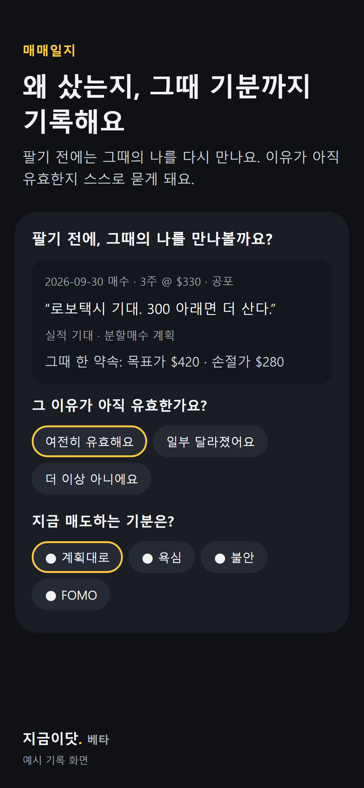
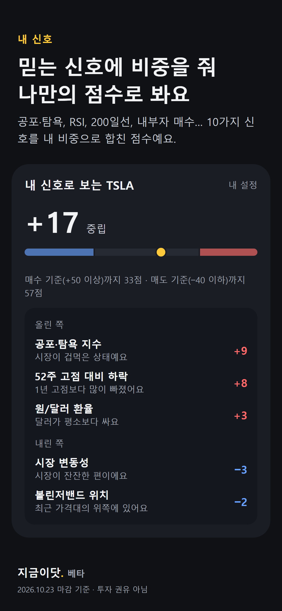
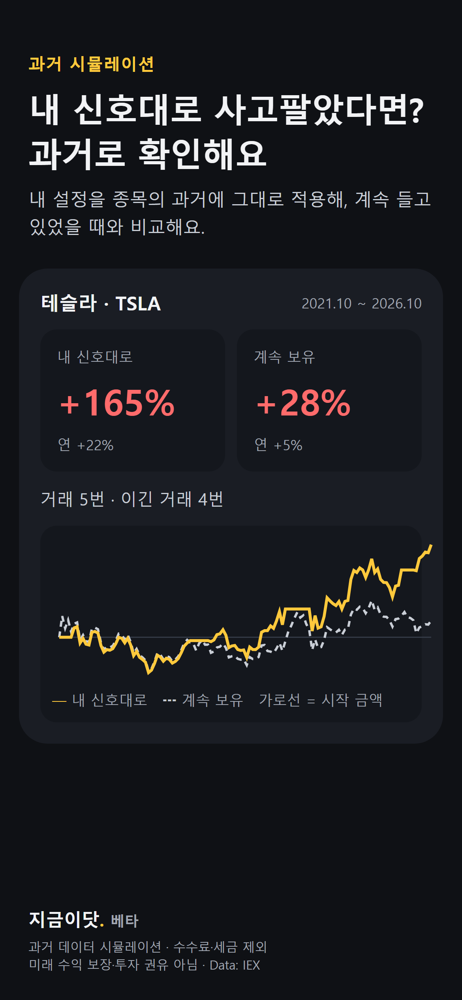
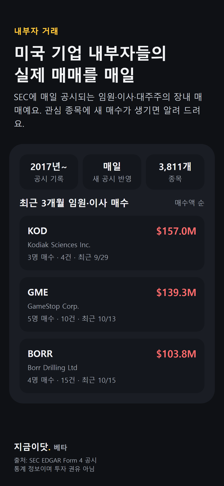
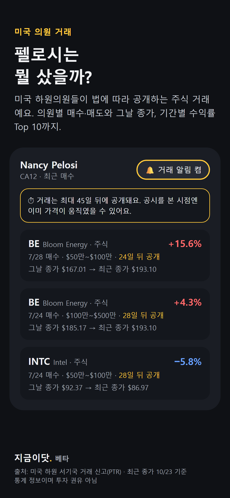

이런 분을 위해 만들었습니다.
하나라도 해당되면 지금이닷이 꽤 도움이 되실 거에요.
- 내 감이 맞았는지 시뮬레이션해 보고 싶은 분내가 설정한 신호대로 사고팔았다면 어땠을까? 살껄 팔껄 껄껄껄 그만하고, 시뮬레이션 돌려봅시다.
- 내 종목에 나만의 신호를 정하고 싶은 분테슬라는 이렇게, 엔비디아는 저렇게. 종목마다 기준을 따로 둘 수 있게 했습니다.
- 공부하자니 복잡하고, 안 하자니 불안한 분어려운 지표 몰라도, 쉽게 판단하실 수 있도록 설명해놨습니다.
- 투자는 꽤 오래 했지만 그때그때 감으로 사고판 분내 '감'을 "내가 미리 정한 기준"으로 만들어두면, "살 때인지", "팔 때인지" 과거의 나와 함께 체크해볼 수 있습니다.
- 매매일지가 좋은 건 알지만 귀찮은 분저도 아들 육아하는 아빠라, 매매일지 쓰기 너무 힘들더군요. 기분 하나만 눌러도 기록이 남도록 해 뒀습니다. 매도할 때는, 과거 샀을 때의 나를 다시 보여줍니다.
- 미국 주식은 어쩔수 없이 후순위인 분직장, 본업 등등.. 더 중요한 일상이 있는 분들을 위해, 매일 들여다보지 않아도, 내가 세팅한 기준을 넘는 날 저녁에 매수, 매도 신호 알림이 오도록 했습니다.
- 미국 하원의원들이 산 주식이 궁금한 분미국 전 하원의장 펠로시 수익률 엄청난거 아시죠? 미국 하원의원들의 거래 공시를 모아 보고, 원하는 의원의 새 공시를 알림으로 받을 수 있게 했습니다.
- 미국 기업 내부자 매매를 챙겨 보고 싶은 분CEO·임원·이사가 자기 회사 주식을 얼마나 사고 팔았는지, SEC 공시를 매일 모아 보여줍니다.
- 시장이 무서울 때 휩쓸리고 싶지 않은 분시장이 극단적 공포에 들어가면 알려주고, 내 종목의 매수 기준에 얼마나 가까운지 신호로 보여줍니다. 두려울때 사야죠^^
- 환율까지 따져 보고 사고 싶은 분달러가 평소보다 싼지 비싼지도 신호에 함께 넣을 수 있습니다.
이런 기능이 있어요
기능과 함께, 실제로 어떻게 쓰면 좋은지도 적어 두었습니다. 적어둔 방법 외에도 다양한 방식으로 활용해보실 수 있을겁니다^^





📝 왜 샀는지 기록하고, 팔기 전에 예전의 나를 만나요
살 때 이유(실적 기대, 분할매수 등), 기분(계획대로·불안·FOMO), 약속(목표가·손절가)을 남깁니다. 팔려고 하면 그때 적었던 이유들을 다시 보여주고 "그 이유가 아직 유효한가요?"를 물어봅니다.
🎯 믿는 신호에 비중을 줘서, 나만의 점수로 봐요
공포·탐욕 지수, RSI, 200일선, 52주 고점 대비 하락, 원/달러 환율, 내부자 매수 등 10가지 신호를 내가 믿는 만큼 섞어서, −100~+100 점수 하나로 보여줍니다. 신호마다 쉬운 설명을 붙여뒀습니다.
🧪 내 기준대로 했다면 과거엔 어땠을까
내 설정대로 사고팔았을 때와 계속 들고 있었을 때를 2017년부터 비교해 볼 수 있습니다. 기준을 바꿔 가며 "어느 정도가 나한테 맞는지"를 확인할 수 있어요.
🔍 이 종목은 어떤 신호에 잘 반응해 왔을까
종목을 고르면 설정 2,000여 개를 시험해서, 그 종목이 어떤 신호에 잘 맞고 어떤 신호엔 안 맞았는지 '종목의 성격'을 알려줍니다. 결과를 이미지나 링크로 친구에게 보여줄 수도 있습니다.
🏛️ 펠로시는 뭘 샀을까? 하원의원 주식 거래
미국 하원의원들이 법에 따라 공개하는 주식 거래를 모았습니다. 기간별 수익률 Top 10, 의원 이름 검색, 의원별 매수·매도 내역과 그날 종가까지 볼 수 있습니다.
🕵️ 회사를 가장 잘 아는 사람들의 실제 매매
과연 내부자들은 자기 회사 주가 예측을 얼마나 잘 하고 있을까? 미국 증권거래위원회(SEC)에 매일 올라오는 임원·이사·대주주의 장내 매매 기록을 볼 수 있습니다. 기간·금액·인원으로 걸러서 볼 수도 있고, 종목마다 차트 위에 내부자 매수 시점을 표시해 줍니다.
🔔 신경 쓰지 않아도, 필요할 때만
내가 세팅했던 신호점수가 기준을 넘은 날, 시장이 극단적 공포·탐욕에 들어간 날, 내 종목에 내부자 매수가 공시된 날 '저녁'에 알려줘요. 내 신호를 받으면, 그날 저녁 매매 판단에 참고하시면 됩니다. 토스·키움 등 내 증권사 앱을 바로 열고, 거래하고 돌아오면 기록하기를 물어봐요.
테스트는 이렇게 진행됩니다
신청하시면 링크를 보내드립니다. 아래 순서대로 진행해 주시고, 테스트 기간 마구마구 써 보시면 됩니다.
- 신청아래 확인 사항을 체크하고, 구글 계정으로 신청서를 내 주세요.
- 참여 안내 받기신청하신 구글 이메일로 Google Play 테스트 참여 링크를 보내드려요.
- 설치링크에서 '테스터 되기'를 누르고 Play 스토어에서 설치해요. 일반 앱처럼 설치돼요.
- 2주 동안 써 보기기록을 한두 개 남기고, 며칠에 한 번 열어 봐 주세요. 앱을 지우거나 테스트 참여를 취소하지 말아 주세요.
- 의견 들려주기불편했던 점, 좋았던 점을 알려주시면 정식 출시 때 반영할게요.
신청 전에 확인해 주세요
모두 해당되어야 신청할 수 있어요.
5개 중 0개 확인했어요
1/2 · 구글 계정으로 로그인해 주세요테스트 초대를 받을 구글 계정을 골라 주세요. 폰 Play 스토어에 로그인된 계정이면 좋아요.
✅ 로그인됐어요! 2/2 · 마지막 단계예요내용을 확인하고 동의를 체크한 뒤 [신청 완료]를 눌러 주세요.
구글 계정으로 로그인하면 이름과 이메일이 자동으로 채워져요. 비밀번호나 다른 정보는 받지 않아요.
자주 묻는 질문
정말 무료인가요?
네, 테스트 기간 동안 모든 기능을 무료로 써 볼 수 있습니다. 정식 런칭하더라도 필요한 기능들은 무료로 충분히 사용하시도록 할 예정입니다.
증권사 계좌를 연결해야 하나요?
아니요. 계좌 연결도, 회원가입도 없어요. 매매 기록은 내 폰에만 저장돼요.
내 투자 기록이 다른 곳으로 보내지나요?
매매일지·메모·가격·수량은 폰에만 남습니다. 알림을 켜면 알림에 필요한 종목 목록과 신호 설정만 익명으로 서버에 보내요.
아이폰은 언제 되나요?
안드로이드 테스트 반응을 보고 아이폰 버전을 준비할 예정이에요.
테스트가 끝나면 앱은 어떻게 되나요?
정식 출시되면 같은 앱이 그대로 업데이트 되고, 기록도 그대로 남습니다.